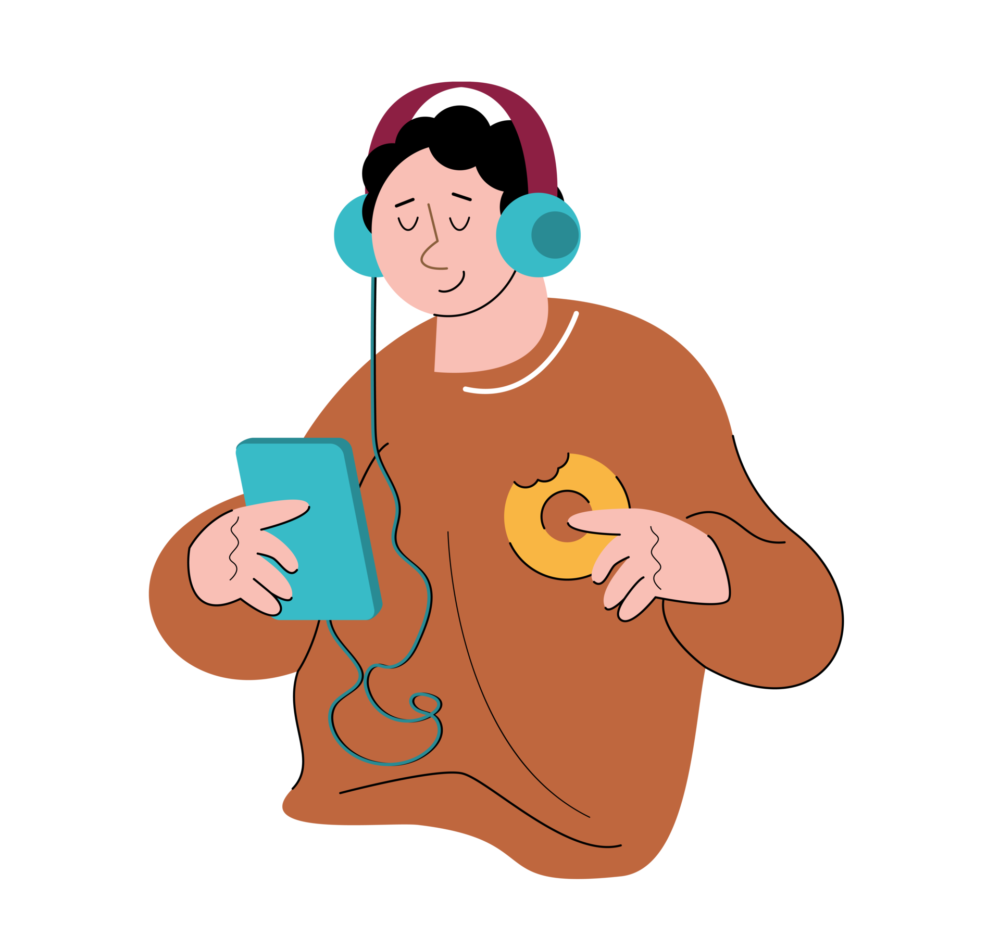

Caracteristica Personales
jugar a videojuegos
Me gusta mucho jugar a videojuegos, es algo que dejaria de hacer aunque estuviera 60 años siguiria jugando
me apasiona mucho.

Una de las cosas que dejaria de hacer es jugar videjuegos podria tener 60 años y no dejaria de jugar seguiria jugando

La música, para mí, es como un hilo invisible que teje los momentos de mi vida, dándoles color, ritmo y emoción. No podría imaginarme un día sin la compañía de mis canciones favoritas, esas melodías que se convierten en la banda sonora de mis días. La música es mi escape, un viaje sin necesidad de salir de mi habitación. Es como un portal que me transporta a diferentes épocas, lugares y emociones.
Aplicaciones que mas Uso
Youtube spotify